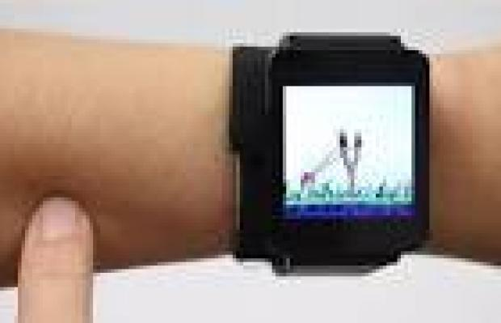
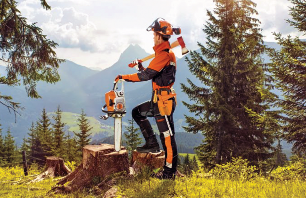

Enter the Writers
Something to hold onto
By Marijn van der Jagt

The importance of weight and volume is seriously underestimated in the quest for ever smaller devices. Just as with a loved one, you want to have something to hold on to. The complaint that you can’t slam down the receiver of a mobile phone after a frustrating conversation is not just a nostalgic one. Given this device is so important in everyday life, you also want to be able to put up a fight.
Nowadays you are punished by your own guilt when you furiously slam your phone down on the table: shocked, you immediately check if the poor thing still works. You can no longer take your emotions out on equipment, as all that remains is a feeble rebuke, as the American comedian Louis C.K. showed in his great sketch about phone users who rail against their providers for slow connection speeds. ‘The signal goes through a satellite into space!’ Louis C.K. yells at these frustrated ‘time-managers’, ‘So you got a minute? It is a miracle of technology that you have in your hands. What have you actually performed in your life?’
This week it was announced that American scientists have developed a technique to use the human arm as a touchscreen for operating a smart watch. This method is necessary, as the buttons on the unit are so small that either the users can’t see them or their fingers are too thick to operate them. This is news that will satisfy Louis C.K. Rage resulting from difficult communication with others, or a slow Internet connection, can now be vented on one’s very own limbs.
The technique still needs improvement, according to scientists, because sweaty skin creates problems in the operation of the arm. Amusing images come to mind: limbs that have been abused by sharp nail imprints, chafed red 'rub' spots, or bruised memories of an angry pinch. Maybe this hitch in technological progress isn’t so unpleasant. At least you have something to hold on to, albeit only your own body.

xxxxxxx